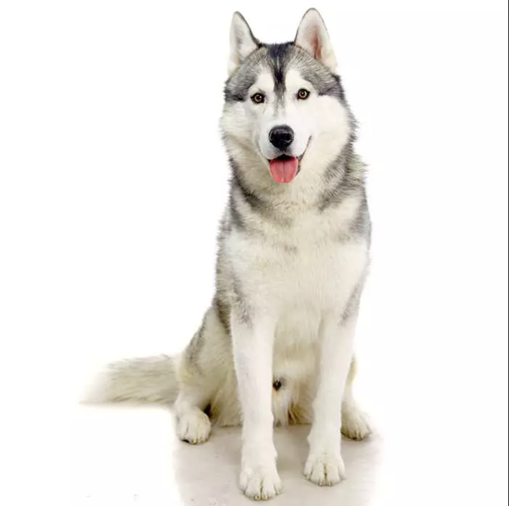
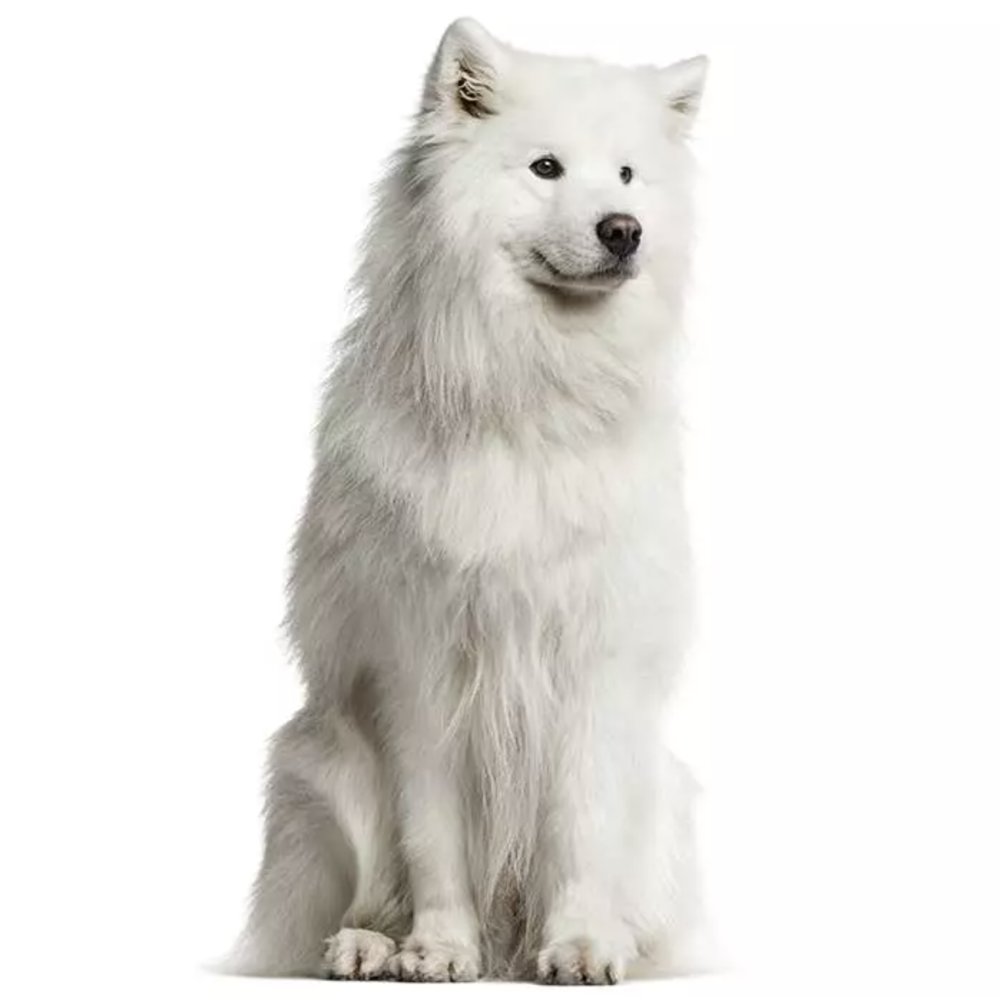

|  |
Siberian Husky |
Despite being a medium-sized dog, the Siberian Husky is kind and powerful. Although they are well-liked all around the world, their best-known use is as sled dogs for work. These playful puppies are available in many different colors, including piebald, black and white, red and white, brown, grey, silver, and red-orange. They may have one brown eye and one blue eye, or their eyes may be split evenly between the two colors. One could argue that one of their most defining characteristics is their menacing eyes. Siberian husky dog breed information: Temperament & Health. BWM. (n.d.). Retrieved November 23, 2022, from https://bowwowinsurance.com.au/dogs/dog-breeds/siberian-husky/ |
|  |
Samoyed |
The Samoyed is a white, fluffy, spitz-like dog that was bred originally to pull sleds and assist in herding, which is often called Bjelkier in Europe. They are sociable, loving dogs who enjoy human interaction. Samoyeds have a characteristic double coat that is white and fluffy. The topcoat shields the undercoat with long, coarse, straight white or silver hair. The dog sheds less frequently during the year, but once or twice a year, the undercoat, which is made up of short, dense, soft fur that keeps the dog warm, sheds abundantly.
Samoyed Dog Breed Information: Temperament & Health. BWM. (n.d.). Retrieved November 23, 2022, from https://bowwowinsurance.com.au/dogs/dog-breeds/samoyed/ |